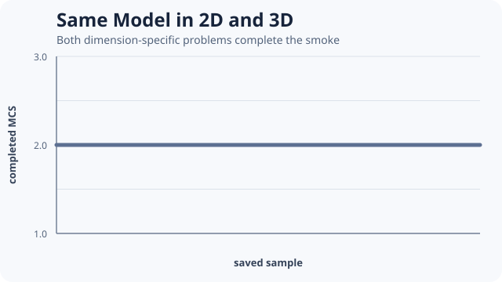

Same Model in 2D and 3D

Reference constructors accept dimension-generic shapes, while realized geometry, volume, and computational cost remain dimension-specific.
dimensional = include(joinpath(
ENV["POTTS_DOCS_ROOT"], "models", "examples",
"same_model_2d_3d.jl"))
(dimensional.dimensions,
map(report -> report.qualified, dimensional.reports),
map(solution -> solution.stats.completed_mcs, dimensional.solutions))((2, 3), (true, true), (2, 2))The source constructs related two- and three-dimensional fluctuating-cell problems, preflights both, and requires both bounded runs to complete. It does not claim that equal numeric parameters have equal physical meaning across dimensions.
For visualization, materialize a full 2D frame or an OrthogonalSlice of a 3D state. Record the slice axis and index with exported output.
Teaching inspiration: the dimension progression in CellularPotts.jl Going 3D. The source is original PottsToolkit code.